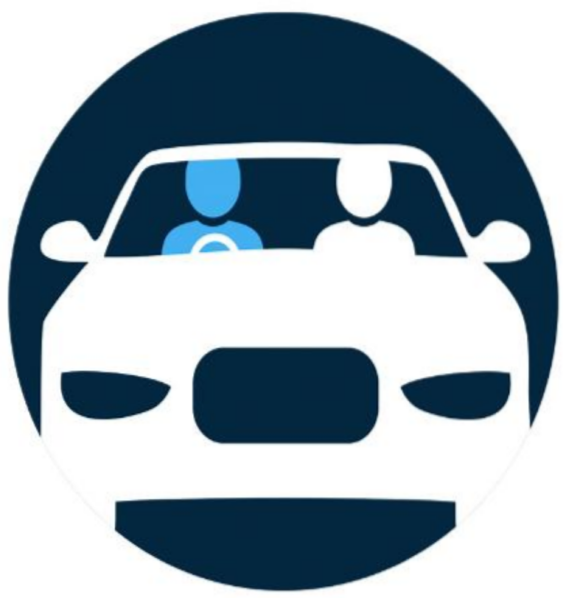

Je m'inscris
Je m'inscris
WebCars
Adapter le Co-voiturage au contexte africain
Développer une offre de mobilité fiable et variée, mettant le client au centre de nos préoccupations en lui offrant chaque fois, une expérience de trajet exceptionnel.
Inscrivez vousPourquoi faire du Co-voiturage ?
Passagers
- Planifier vos déplacement à l’avance.
- Eviter les retards liés à la pénurie de transports en commun.
- Eviter les baggares pour accéder à un taxi.
Conducteurs
- Sources de revenus supplémentaires
- Aider les gens autour de vous en mettant à leur ddisposition votre voiture.
- Soyez solidaire.


- Assurer votre sécurité
- Faciliter vos déplacements
- Reduire votre temps de route
- Vous mettre en relation avec des personnes fiables et proche de vous
Le Court-voiturage social
Duis nec eleifend ipsum. Pellentesque semper, sapien ac vulputate aliquet, mi tortor venenatis justo, ut fermentum magna massa a mauris. Praesent ut posuere ex, eu fermentum augue. Donec pellentesque nulla placerat sagittis
Créez des groupes pour tisser des liens avec vos futurs compagnons de route
Recherchez dans vos groupes des trajets disponibles sur votre itinéraire
Créez un compte conducteur pour pouvoir proposer des trajets
Proposez un trajet à chaque fois que vous vous déplacez
WebCars à commencé sur WhatsApp et nous avons des retours positives de nos premiers utilisateurs
